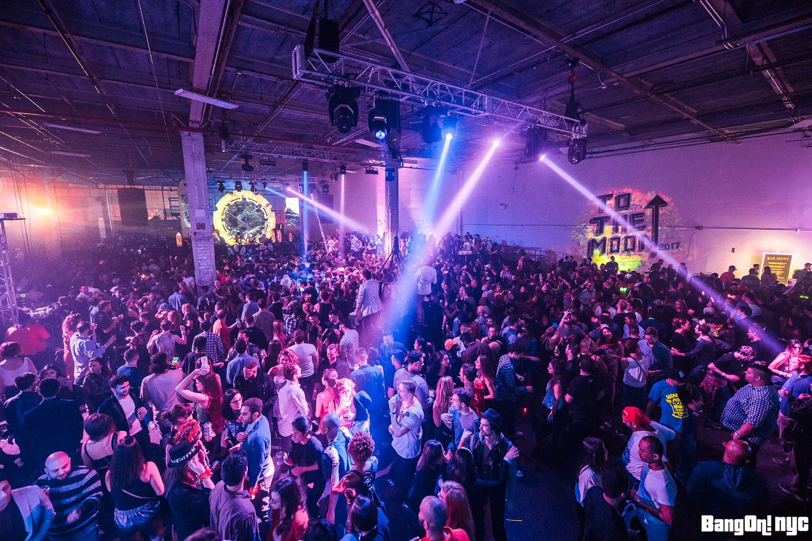
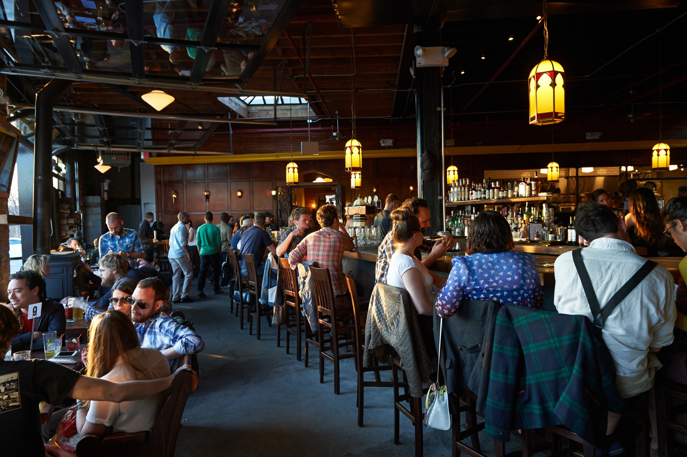

Epicenter of the arts. Dining and shopping capital. Trendsetter. New York City wears many crowns, and spreads an irresistible feast for all. When you think about New Year's Eve events in New York, the Times Square New Year’s Eve celebration is probably the first one that comes to mind. While the rest of the world watches half a million New Yorkers freezing their tails off in midtown, the rest of NYC will be shutting it down like it’s 1999—sorry, we mean 2018. So don your most festive holiday dresses and getups and head out for a night of New Year’s Eve fireworks, amazing New Year's Eve concerts and more first-of-the-year festivities with our roundup of the best parties and events for ringing in the New Year.
After a rocky 2017, there’s a lot of pressure to have a good time on New Year’s Eve 2018. NYC’s biggest celebration takes place in Times Square, but our guide also includes all the best parties, raucous concerts and free things to do, like watching a New Year's Eve fireworks display in one of the best NYC parks, if you're willing to brave the cold and the crowds. Don’t just settle for an intimate evening at home with your two cats and one of the flicks from our best movies of all time list—a night of fantastical revelry in NYC awaits!
Top experiences in New York City
Parties

New Year’s Eve Love Bomb @ Good Room : Looking to dance your ass off this NYE? Head to Good Room on the 31st for an electronic-funk marathon sure to last all night long. Your ticket gets you entrance to the concert/party, a midnight champagne toast, party favors and post-party bagels.
BandOn!NYC New Year’s Eve Time & Space : The party masters at BangOn!NYC will keep the fun going all night long at this year’s Time and Space themed event. The massive NYE celebration 2 stages, a silent disco, interactive performances, fire breathers, large scale art, scrumptious food vendors and more.
NYE at the Westlight : Rooftop season lives on at the Westlight! Grab tickets to this upscale NYE party for an awesome view of the fireworks, specialty cocktails, food and live music.
The Bunker Limited NYE: This warehouse party in Brooklyn is the EDM party of your dreams.
New Year’s Eve Y2K @ House of Yes: Party like it’s 1999 at this Y2k themed bash from House of Yes. Be warned though, 90’s style outfits are required for entry.
Spyglass New Year’s Eve: Party atop the Archer Hotel at this swanky, high-end event.
NYE: A Date With Fate @ The Brooklyn Winery: Known for their extravagant party themes, the Brooklyn Winery has pulled out all the stops for 2017’s A Date With Fate. Relish in this 1940’s themed night complete with an open bar, food and live DJ sets.
Diners
Massoni: Enjoy a four course dinner and five hour open bar at Massoni on the 31st.
Blacktail: For $50 a pop, enjoy a full meal, plenty of drinks and live entertainment until well into the evening.
Attaboy: Join Attaboy for a five course, high-end tasting menu on NYE to ring in 2018.
Bars

Camp Porchlight NYE: Chelsea’s Porchlight transforms into a winter ski lodge for this year’s NYE celebration. Known as Camp Porchlight, the party will feature a full camp-fire-esque meal, plenty of winter drinks, and a couple of fun, themed games to boot.
Beer Authority NYE: This giant beerhall near Times Square boasts over 90 taps and 100 beers by the bottle. Buy a ticket to this hopped out bash to get in on great drinks, an open bar, a huge buffet and more.
The Awesome Aughts at Union Hall: Ring in 2018 by brining back the early 2000’s. With multiple DJ sets bumping your favorite hits from pre-2010, this party is one throw back you’ll wanna remember.
NYE at The Belfry: Your standard neighborhood bar gets extra fancy for this year’s New Year’s bash. Tickets start at $85.
Mother of Pearl’s “Stranger Drinks“: Send off 2017 by celebrating one of the year’s best TV shows: Stranger Things. Mother of Pearl’s gets decked out in ’80s attire for this late-night, themed event.